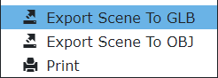

场景导出
Knowledge Book查看器允许将当前显示的 3D 模型内容导出为通用图形格式。
要启动导出，请单击应用程序标题中的共享图标，然后选择导出场景功能之一。

然后，查看器的内容将导出到文件中，您可以将导出的文件下载（保存）到您的计算机上。
您需要拥有“导出图形场景”权限才能在“共享”菜单中看到“导出场景”命令。单击此处了解有关权限和权利的更多信息。 |
支持的格式
场景导出目前支持GLB和OBJ文件格式。
GLB
- GLB 导出会生成包含所有场景数据的单个文件。
- 有关 GLB 文件格式的更多信息，请参阅这篇维基百科文章。
OBJ
- OBJ Export 生成两个文件：一个包含场景对象的 OBJ 文件和一个包含 OBJ 文件中对象的材质属性的 MTL 文件。
- 有关 OBJ 文件格式的更多信息，请参阅这篇维基百科文章。
对于 OBJ 文件格式，重要的是两个文件都保存在同一位置，并且 MTL 文件保存为建议的mat.mtl名称。如果更改 MTL 文件的名称，在第三方查看器中打开模型时，材质将无法正确显示。 |
局限性
- 场景按原样导出，即只有导出时完全加载的资源才会包含在导出的文件中。
- 隐藏的资产不会导出。
- 标记点标签和标签不会导出。